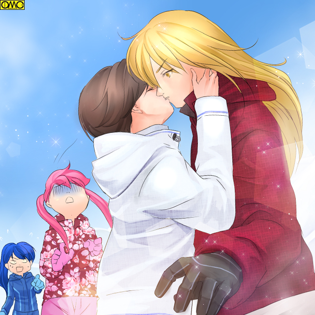

第２２話「一途な恋」Ｐａｒｔ２
「まったく。なんなんだよ？ なぎさの奴」
恭兵は「置いてかれて」から、なぎさとはすれ違いである。
「あっ。恭兵クーン」
「ほんとだ。恭兵クーン」
恭兵の不機嫌も知らず、四方八方から女子が声をかけてくる。
そしてよって来る。
「やぁ。みんな」
即座に恭兵は笑顔で対応する。
まりあが学園のアイドルなら恭兵はその女子向けだった。
あっという間に女子に囲まれる。
恭兵自身もスター気どりだった。ゲレンデで愛想を振りまいていた。
「まったく。軽薄を絵にかいたような男だな」
すべての女子にその美男子ぶりが通じるわけではない。
リフトの順番待ちでたまたま居合わせた芦谷あすかは、恭兵たちの様子を見てバッサリと切り捨てていた。
もともと男に対して敵愾心もある。
そしてこの軽さではいい感じにならない。
「うーん。火野君はやっぱり男子よりも女の子のほうが好きなのかにゃ？」
やはりリフト待ちはともかく、意図してかあすかのそばにいた恵子。
誰とでもフレンドリーに接する恵子には、さすがのあすかも口を開く。
「なにを当たり前のことを言っているのだ？ おまえは？」
「えー。やっぱり美少年には美少年を愛してほしいにゃあ。例えば信長様と蘭丸君。景勝様と兼次さんみたいに」
さらっと怖いことを口にしてる恵子。
「む、なるほど。衆道（しゅどう）は武士（もののふ）のたしなみか。とすればお前の言うこともわからなくはない」
まさかの受け入れだった。
「なにをさっきからただれた会話をしているのよ？」
意外にも理解を示してしまったあすかに、とうとう瑠美奈が突っ込んでしまった。若干顔が赤い。「お嬢様」には刺激が強かった。
彼女も同じ理由でそこにいた。
「不純異性交遊でさえダメなのに、不純『同性』交友なんて認められるわけないでしょ？」
「ニーズにこたえるのもアイドルの」
「あんた以外のどこにそんなニーズがあるのよ！」
まりあもＢＬを直視できなかったが、瑠美奈も拒絶がひどい。
「温室育ち」にはこれまた刺激が強いということか。
そんな会話もつゆ知らず。女子生徒たちに愛想笑いを振りまく恭兵だった。
しかしその笑顔がぎこちないことに、何人が気が付いたか？
なぎさのこともある。
しかしそれ以上にこの場にいた女子の七割がたと恭兵は唇を重ねていたのである。
もちろんそれぞれに「君だけ」と特別扱い。
「二人だけの秘密」と黙らせておくのも忘れてない。
女子の間でアイドル扱いされている恭兵。
ファンは多い。
それだけに女子にとって「敵」も多い。
だから表面上は仲良くしていても、内心では「自分だけが特別な関係」と見下ろすものが多数。
他者を相手にもしない。それゆえ意外なほど「修羅場」にはならないでいた。
ただしそれは危うい緊張感。まさに薄氷を踏むが如く不安定な状態だった。
何がきっかけでほころびが生じるか分かったものではない。
恭兵にしたら生きた心地がしない。
（大丈夫。全員と「普通」に接していれば意外になんとかなる）
キスした相手の女子にしたら、自分との『特別な関係』を他の女子には秘密にするため「その他大勢」の扱いととる。
それでばれないと恭兵は踏んでいた。下手なしぐさのほうが危険性は高まる。
普通にしていれはいいのだ。
とはいえど、それがまとまってくるとさすがに恭兵としても心臓に悪い。
通常の学校生活だと授業のサイクルの違いや部活などでここまでは集まらない。
しかし今は二年生全体で同じスキー合宿だ。クラスの違いも関係ない。だからこんなに集まってきた。
寒い雪山だけに唇の保護が目的と考えるのが妥当だが、それでもそれぞれリップクリームが塗ってある唇はキスをねだられているように感じてしまう恭兵であった。
何とか笑顔を保つ。
ばれたら血を見る。
そりゃぎこちなくもなろというものである。
なぎさは「むしゃくしゃ」して、それを払拭すべく体を動かしていた。
ひたすら滑っていたのである。故に恭兵は彼女を見つけられなかった。
それほどまでに滑り、体を動かしたのが功を奏して十分に「発散」できていた。
もやもやが吹き飛ぶと自分を客観視する余裕も出てきた。
「あー。キョウ君に悪いことしたなぁ」
冷静になってくると自分に非があるのも理解できてきた。
「なんか変に突っかかっちゃって。うん。このままじゃいやだし、謝ってこよう」
アスリートらしい気持ちの切り替わりだった。
彼女は恭兵を探すべく動き出した。
とりあえずリフト乗り場へと向かう。
滑りながら探すつもりだ。
探し求めていたのは優介もだった。
（やっぱり『思い出』なら『あれ』だよねぇ。でもまともに行っても応じてもらえはしないだろうし、不意打ちかな？）
いったい何を欲しているのか？
ただ一つ言えるのは「獲物を求める狩人の目」をしていたということだ。
滑っている相手では捕まえにくい。
狙う相手は運動のできるものばかりで追いつけるとは思えない。
人目にはつくがたまり場。例えばリフト待ちがねらい目と彼は思い、一番近いところに向かう。
そのころ、裕生と詩穂理は――
「いいか。シホ。お前は無駄に力が入っているんだ。もっと力抜いて。そう。いい感じじゃねぇか」
「だ、だって、ヒロ君に触られていたら私」
壊滅的に運動のできない詩穂理に裕生がスキーのレクチャーをしていた。
他の女子相手なら「セクハラ」と言われそうな裕生の「スキンシップ」も詩穂理相手だと問題なし。
どちらかというとバカップル全開で別の問題になっていたが、とにかく二人は自分たちの世界に入り込んでいた。
心なし雪も二人の足元だけ溶けつつあるように感じられた。
「よし。ゆっくりでいいから滑ってみるか」
「う、うん」
二人はゆっくりと滑り始めた。
目的地はリフト乗り場。
丁度恭兵たちがたむろしいるあたりだ。
大樹はだいぶ滑り方をマスターしてきた。
一方の美鈴は相変わらずだ。
小柄さがたたり風圧に負けてそりから落ちること数回。
そのたびに大樹がソリを回収に出向いていたから、彼は上達したのである。
「あうう。何度やっても風に負ける……」
風圧に耐えきれずのけぞり、体勢を崩し結果として転倒する。
「それなら」
ぼやく美鈴に大樹が詰め寄る。そして
「速い速いー」
大樹の後ろを美鈴がそりで着いてきていた。
全部は無理でも大半の空気抵抗を大樹が引き受け、その後ろを美鈴が滑っていた。
車で言うスリップストリームだった。
ぴったりと息の合う二人だからできる話だった。
リフト乗り場を目指して滑っていく。
「もう。優介ったらどこに行っちゃったのよ」
ぼやくまりあ。
いつもならその愛らしい顔故に男が群がってくる。
しかし今回はタカを模したマスクが「男よけ」になっていた。
覆面だけならともかく、くちばしまであるとさすがに引く。
遠巻きに見られていた。
「しょうがないなぁ。一度みんなのところに戻ろうかしら？」
まりあはスタート地点に向かって滑り始めた。
リフト乗り場付近という「舞台」に恭兵が主役。準主役で優介。わきを固めるところでなぎさとまりあ。
「役者」がそろいつつあった。
「あっ。いたいた。火野くーん」
まるで女子のような口調の「準主役」が手を振りながら「主役」に近寄ってくる。
その雰囲気がまるでヒロインのようだった。
「げっ」
露骨に嫌そうな表情になる恭兵。
彼は男に興味はない。
ましてや男と「恋人のように」触れ合うこともない。
しかしこの優介は逆だ。
まるで恋人同士のように触れてくる。
なまじ顔が整っていて、男子としては華奢なので、女の子と錯覚しておかしな気分になりかけるのも嫌だった。
しかしここは多数の女の子の手前。
いくら相手が男でも、邪険に振り払うようなネガティブなイメージの行動はとれない。
即座に笑顔を作る。
「やぁ。水木。どうだい。（スキーの）調子は？」
当たり障りのない会話をする。
本心では（どっかに消えろ）と思っていたが。
何が悲しくて女子相手の甘い時間を、男にさかないといけないのだと……違う！
「女の子をはべらす」のも今したい事じゃない。
様子のおかしかった幼馴染。ポニーテールのスポーツ少女を探したかった。
しかし探す相手は見当たらず。
探してないどころか近寄りたくない相手はぐんぐん近寄ってくる。
（お前じゃないよ。水木。僕が待っているのはあのバカだ）
もちろんこれは表情に出さない。取り巻きの女の子が見ている。
不思議なことにこの闖入者に対してグルーピーたちは何も反応しない。
むしろ「もう一人のスター」が現れたという表情のものさえいる。
遠巻きに見ている恵子は大騒ぎだった。
「小姓キター！」
足を大きく開き、両手も突き上げ「Ｘ」の字になって恵子が叫ぶ。
「小姓？ なるほど。あの雰囲気は通じるものがあるな。だが私のイメージとしてはむしろ『宦官』だがな」
「芦谷さん？ あなた武芸にさえ通じていれば何でもありなの？」
思わず瑠美奈も突っ込んだ。
「私は許さないわよ。私のアプローチを無視して男に近寄ったりしたら」
まりあに対する対抗意識から優介を自分のものにしようとしたのがきっかけだったのか？
それとも本気でタイプだったのか。
いつの間にかすっかり優介に惚れこんでいた瑠美奈である。
ただ振られるだけならまだしも、よりによって「男」に走られたら女のプライドはズタズタである。
「あっ。いた。優介ーっ」
まだかなりの遠方にもかかわらずまりあが、くちばしのマスクどころか目だし帽もとって甲高い声で叫ぶ。
まさか鷹を模したマスク故に視力まで鳥類並みになったわけではあるまいが、とにかく見えていた。
単純な話、明らかに女子らしい一団の中に、顔は見えないまでも長身の男子。おそらくは恭兵と思った。
そして見覚えのあるウエアの人物が恭兵に近寄っている。
かなりの「危険性」でそれか優介だ。
「優介。待ちなさぁーいっ」
彼女は何か胸がざわついた。
「いやな予感」が彼女を急がせる。
「スキーの調子？ うーん。ちょっといまいちなんだよね」
会話を続ける優介。
「その気」のない男子でも「勘違い」しそうな女性的な笑みと顔だち。
生まれてくる性別を間違えたとしか思えない怪しい色気。
「だから恭兵君。ぼくに手取り足とり、教えてくれないかな？」
「先生に教われよ。そのための教室だろ」
どうしても男相手はそっけなくなる。これは別に女子と違い気を使う必要がないので、そのまま出る。
（うーん。ガードが堅いなぁ。どうせ女を侍らせて一人にはならないと思って、逆に油断をねらってわざわざこの中に飛び込んだのに）
優介は「チャンス」をうかがっていた。
それは意外な形でやってきた。
「あっ。いたいた。キョウくーん」
すっかり機嫌の直ったなぎさが遠くから声をかける。
もう「取り巻き」に臆するのもやめた。
睨まれても構うもんか。
そんな「勢い」で声をかけた。
それがとんでもない事態の引き金になるとも知らす。
その声はこのときばかしは「不幸にも」届いてしまった。
「なぎさ？ なぎさぁっ。お前どこに行ってたんだよっ？」
恭兵自身も不思議に思うほどなぎさが気になっていた。
それが彼の注意を幼馴染のスポーツ少女に向けさせてしまった。
目の前の危険な少年……優介に対する警戒を忘れてしまった。
（隙ありっ！）
とっくに覚悟を決めていた優介は、飛びつくように恭兵の首に手を回し、そのまま体重を浴びせる。
（え？）
逆はいくらでもあるが、やられることが頭になかった恭兵は、足元の不安定さもありそのまま優介に「押し倒された」。
そして……その唇に優介のそれが重ねられていた。

このイラストはＯＭＣによって作成されました。
クリエイターのｒｉ−ｋｏさんに感謝！
「ゆ、ゆうすけぇっ！？」
近寄っていたまりあはその突然のシーンに血の気を失う。
滑りながら気絶して、受け身もとらずに転倒した。
「やべえっ。シホ。急ぐぞっ」
たまたま同じ場所を目指していた裕生だったか、普段は鈍感で無神経な彼も、母を目前で溺死させたことから女性の体調不良にだけは過敏に反応し、まりあを救うために急がせた。
（ヒロ君！？ う、ううん。今は救護活動。私より倒れた高嶺さんを助けるのを優先するのは当然ね）
目の前で他の女のために急ぐ裕生。それが救護のためとはいえ複雑な心境に陥る詩穂理。
（私のように地味な女じゃなくて、高嶺さんのように華やかな方がやはり引き付けるのかしら？）
場違いな思いを抱く。
大樹も異変を感じ取り合流。彼がまりあを担いで教師の下へと向かった。
何度も何度も。幾人も幾人も唇を重ねてきた恭兵のそれ。
しかしそれはすべて女子が相手。
一生するはずのない相手に「唇を奪われ」たが、自分が何をされているのか理解できてなかった。
だから隙があった。
もっとも女子と違い性的被害を頭に置かない男子。
ましてや常に『狩る側』の恭兵としたら全くの想定外。
唇をこじ開けられ、優介の舌が侵入してきたところでやっと認識して抵抗を始める。
だが脱出すべくもがくものの、下が雪で踏ん張りがきかずじたばたするだけだ。
悪いことにスキー板が雪に突き刺さり脚の自由も効かない。
その様子をなぎさは呆然自失しながら、棒立ちになってみていた。
彼女にも何が起きているのかわかっていなかった。
まだほかの女の子にキスしているならともかく、男に唇を奪われているのだ。
理解できないのも無理はない。
「フリーズ」していた。
「にゃーっ」
奇声に近い歓声。嬌声をあげる恵子。こちらは「理解の範疇」だけに喜色満面。
「なにこれ？ なにこれ？ なにこれ？ これなんてサービス？ 美少年二人の絡みがリアルでなんて」
小柄で女性的な風貌の優介が、長身で端正な恭兵を組み敷いている。
「いや……とてもではないが芝居に見えないんだが」
こちらは困惑するあすか。
冷静なのは「悪ふざけ」とみなしていたから。
しかしどうにも迫真に迫りすぎている。
男同士だが婦女暴行―レイプを彷彿とさせる。
「……ひょっとして、本当にキスしてるんじゃないの？」
顔を赤らめて瑠美奈がいう。こちらも箱入り娘。耐性はない。
じたばたしているうちにスキー板が外れ、それで脚が自由になる。
恭兵はそれを用いて優介の腹を押し上げるように蹴り、引きはがす。
「わわっ」
強引にはがされ声の出る優介。ゆらりと立ち上がる恭兵。
「ひっどいなぁ。何するのさ。恭兵君」
「こっちのセリフだ。そいつは！ なんてことしやがる」
さすがに「王子」を気取ってられない。
そりゃあそうだ。何しろ「男」に「唇」を奪われたのだ。
かなりの屈辱である。
気取る余裕などなかった。そして怒りに身を任せ殴りかかる。
「きゃーっ」
女子の悲鳴が恭兵を我に返した。
「今度は火野君が水木君を襲うの？」
「あの二人、そんな関係だったの？」
「やっぱり見た感じ火野君が攻めよね」
何人かの女子。恭兵と唇を交わしてない女子が「腐った」発言をする。
「ち、違う。僕にはそんな趣味はない。キスも女の子としかしたことない」
性癖のカミングアウトならともかく、実際はホモじゃないのにそう扱われてはたまらない。
そして優介にキスされたことて錯乱もして、言わなくていいことを口走る。
「そうよね。火野君。あたしとだけだよね」
この空気に流されたか、過去に恭兵とキスした一人が先走る。
しかしそれは聞き流されなかった。
「はぁ？ 何言ってんのあんた？ それはあたしよ」
「あんたこそ何？ 恭兵と特別な関係になったのはこの私」
過去に恭兵が手を出した女子が、そろいもそろって「自白」と「自爆」を始めた。
「ああああっ。みんな落ち着いて」
次々に暴露される『秘め事』に、恭兵は逆上から恐慌状態に転じた。
だがまさに地雷だった。
あっという間に「あちこちに手を出した」ことが白日の下にさらされた。
「自分だけが特別」と思っていた女子にしたら裏切られたことになる。
「「「「サイテー」」」」
全く同じ言葉を吐いて、大多数の女子が消えた。
それまで「王子」ともてはやしたのに、すさまじい手のひら返しだ。
キスまで行ってなかった女子の何人かは
「良かったね。これで水木君とだけ甘い時間が過ごせるよ」
「やっとこのキスで思いが通じたんだね」
どうやらもともと腐っていたのが加速したか。あるいは「覚醒」したらしい。
変な形で受け入れていた。
すべてを失った。
「……それもこれもみんなお前が悪いんだ！」
さすがに八つ当たりとは言えない怒りを優介にぶつける恭兵。
「ひっどーい。ぼくはただ、思い出が欲しかったのに」
「まだいうか」
もう王子も何もない。優介に殴りかかるが逃げられる。
「うーん。ちょっとこの場はまずいみたい。続きは誰も見てないところで」
さすがに恭兵の剣幕に優介は逃げ出した。
「待て！」
外れていたスキー板をはめなおしているうちに距離を取られた。
慌てて追いかける……しかしまだなぎさがそこにいた。
「なぎさ！？ お前、今の見てて？」
「う、うん。全部見ていた……」
血の気の引く恭兵。
優介にキスされたのは「悪ふざけ」でごまかせなくはない。
実際に向こうがやってきたのだ。
しかしそれから「過去の悪行」がばれたのがまずい。
（……どうして僕はこいつに対して後ろめたい思いを？ こいつとはなんともないはずだ？）
「キョウ君。そういう趣味だったんだね」
「は？」
このバカ女。何か勘違いしている？
「おい？ なぎさ」
「あたしなんかに振り向かないわけだよね」
恭兵はどきっとした。なぎさの目に涙が浮かんでいたのだ。
「さよなら」
短く言うとなぎさは滑って行った。
「おい。待てよ。なぎさ」
他のどの女子に手のひら返されても何もしなかった彼だが、それまで無視し続けてきた幼馴染の涙に「どういうわけか」動揺し、そして追いかけるべく滑り出した。